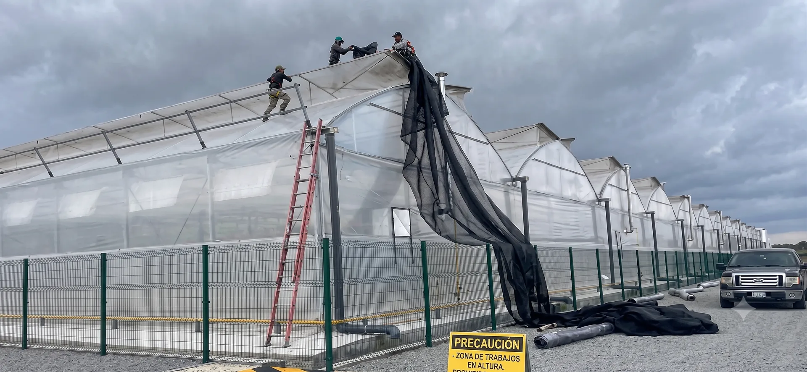

Alta TecnologíaInvernaderos Metálicos Mecanizados
invernadero metálico mecanizado es una instalación agrícola con estructura de acero o aluminio equipada con sistemas automatizados (motores, sensores y controles electrónicos) para regular de forma autónoma y ventilación, el riego, la fertirrigación, iluminación y la temperatura interior según las necesidades del cultivo. Componentes Estructurales y MecanizadosPerfiles y uniones: Tubos de acero galvanizado, cerchas, pilares y arcos fabricados con precisión mediante procesos de mecanizado industrial para asegurar un acople perfecto sin holguras.Sistemas de sujeción: Canales metálicos, grampas y perfiles de aluminio con alambre zigzag para fijar la cubierta plástica sin dañarla.Bases y cimentación: Anclajes empotrados en dados de concreto para soportar cargas de viento y peso operativo.Automatización y Mecanización Ventilación cenital y lateral: Motores reductores conectados a ejes que abren o cierran ventanales automáticamente por señales de sensores de temperatura y viento.Climatización y pantallas térmicas: Sistemas retráctiles de sombreo o aislamiento térmico accionados por piñón y cremallera.
Ver productos